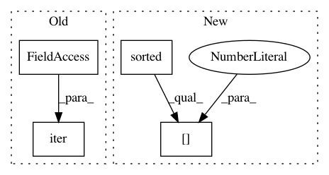

03ad8468a522b6ffe9b9abb46de24b58464b6164,texar/data/data/data_iterators.py,DataIterator,__init__,#DataIterator#Any#,133
Before Change
self._variable_scope = get_unique_named_variable_scope("data_iterator")
with tf.variable_scope(self._variable_scope):
arb_dataset = self._datasets[next(iter(self._datasets))]
self._iterator = tf.data.Iterator.from_structure(
arb_dataset.output_types, arb_dataset.output_shapes)
self._iterator_init_ops = {
After Change
self._variable_scope = get_unique_named_variable_scope("data_iterator")
with tf.variable_scope(self._variable_scope):
first_dataset = self._datasets[sorted(self.dataset_names)[0]]
self._iterator = tf.data.Iterator.from_structure(
first_dataset.output_types, first_dataset.output_shapes)
self._iterator_init_ops = {
In pattern: SUPERPATTERN
Frequency: 3
Non-data size: 4
Instances
Project Name: asyml/texar
Commit Name: 03ad8468a522b6ffe9b9abb46de24b58464b6164
Time: 2018-09-13
Author: zhitinghu@gmail.com
File Name: texar/data/data/data_iterators.py
Class Name: DataIterator
Method Name: __init__
Project Name: PetrochukM/PyTorch-NLP
Commit Name: dd2eaf6c174fdd757514bc06d1063e5f9c6bb4a0
Time: 2019-10-20
Author: petrochukm@gmail.com
File Name: torchnlp/samplers/noisy_sorted_sampler.py
Class Name: NoisySortedSampler
Method Name: __iter__
Project Name: asyml/texar
Commit Name: 03ad8468a522b6ffe9b9abb46de24b58464b6164
Time: 2018-09-13
Author: zhitinghu@gmail.com
File Name: texar/data/data/data_iterators.py
Class Name: FeedableDataIterator
Method Name: __init__